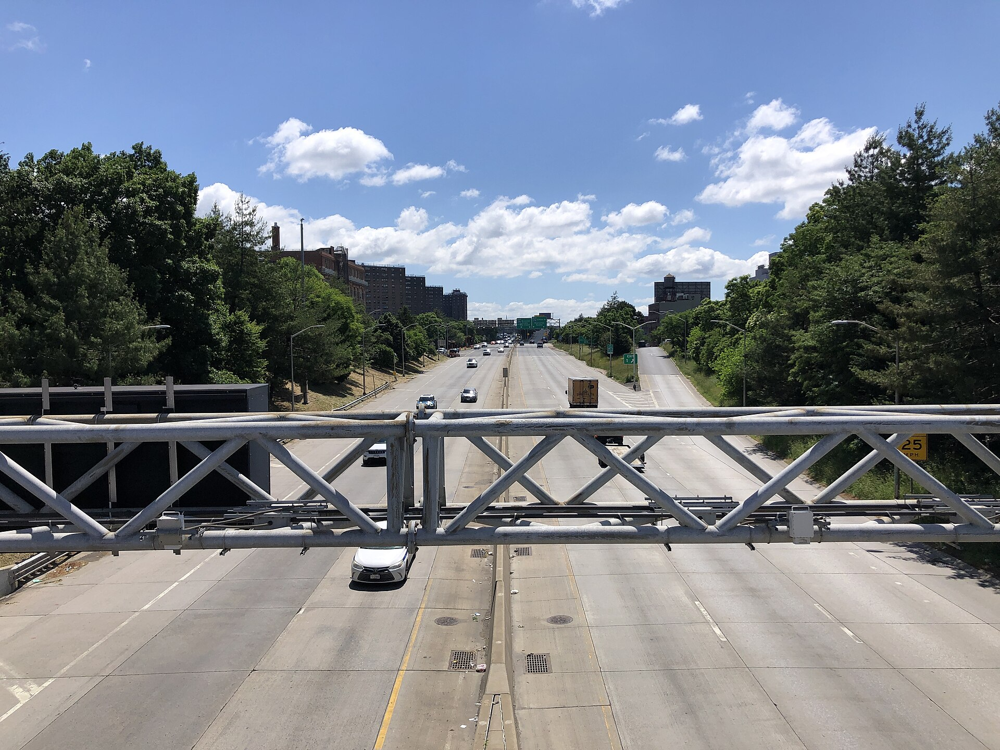

NYC Congestion Pricing Datathon 2026
The Toll
It Takes
New York's congestion toll went live on January 5, 2025, promising cleaner air in Manhattan. Did it clean the air across the city, or push the problem onto South Bronx neighborhoods already living in Asthma Alley?

Outside the zone: South Bronx
- Cross Bronx Expy−0.52µg/m³
- Mott Haven+0.30µg/m³
Into the zone: East River bridges
- Queensboro Bridge−1.10µg/m³
- Williamsburg Bridge−1.04µg/m³
- Manhattan Bridge−1.33µg/m³
Step-change in PM2.5 at each monitor after the toll (ITS βpost), relative to a
Queens College + Van Wyck counterfactual. Green: fell. Brick: rose.
Hunts Point is omitted: its monitor was offline Sept 2023 to March 2025, so no pre/post comparison at the toll date is possible.
What the data shows
-
−0.6 to −1.6 µg/m³
Inside the zone, the air got cleaner
At the Manhattan landings of the Manhattan and Williamsburg Bridges — both inside the CRZ — PM2.5 fell 0.6–1.6 µg/m³ relative to control monitors in 2025 and kept falling in 2026. Manhattan Bridge is significant in every specification tested.
-
+0.87 µg/m³ vs. VW
Outside the zone, it didn't
Relative to Van Wyck, Mott Haven and Cross Bronx ran about 0.9–1.0 µg/m³ higher in 2025 than before the toll — and so did volunteer sensors in Bay Ridge, Brooklyn Heights, and East Harlem. Relative to Queens College, all of them were flat to slightly up.
-
−0.38 to +0.02 µg/m³
The EJ question can't be separated from the zone question
Every monitor inside the zone except Queensboro sits in a designated tract, and so does every outside-zone monitor with a full pre-toll record. Panel estimates of an EJ gap range from −0.38 to +0.02 µg/m³ depending on how the flag is defined, none significant. What the data shows is geography: inside the zone improved; no outside-zone site did, EJ or not (Section 9). One peak-hour diversion test (Cross Bronx, weekdays) is significant; Mott Haven's is not; regulatory NO2 in the Bronx shows no change beyond the regional trend.
Did congestion pricing clean the air, or move the problem?
An interrupted time series at each monitor, traffic-diversion residuals at every crossing, and a regression that separates environmental-justice sites from the citywide trend.
- 1PM2.5 by monitoring corridor
- 2Observed vs. counterfactual, site by site
- 3ITS regression results
- 4Did EJ-designated sites fare worse?
- 5Robustness checks
- 6Traffic diversion by bridge and tunnel
- 7Zone entries since the toll began
- 8Schools in the Mott Haven corridor
A green corridor for the most-burdened site
Street-canyon geometry and canopy gap for Mott Haven, three planting typologies adjusted for the canyon, a maturation curve, and a species list.
- 1Corridor conditions
- 2PM2.5 removal, naïve vs. canyon-adjusted
- 3Removal over time as planting matures
- 4Recommended species
- 5Method and limitations
Data
| Dataset | Source | Years |
|---|---|---|
| Hourly PM2.5 monitors | NYC Community Air Survey | 2019–2026 |
| Annual PM2.5 rasters | NYC Community Air Survey | 2008–2024 |
| Congestion Relief Zone vehicle entries | MTA | 2025–2026 |
| Hourly bridge and tunnel crossings | MTA Bridges & Tunnels | 2019–2026 |
| Disadvantaged community designations | New York State | — |
| Street tree census | NYC Parks | 2015 |
| LION street centerlines, v24B | NYC Planning | — |
| Building footprints | NYC Open Data | — |
| MapPLUTO 26v2 | NYC Planning | — |
| Truck routes | NYC DOT | — |
| 311 vehicle idling complaints | NYC Open Data | 2010–2026 |
| School locations | NYC Department of Education | — |
| LGA ASOS weather (temp, wind, RH, precip) | Iowa Environmental Mesonet | 2019–2026 |
| Hourly NO2 monitors | US EPA AQS | 2022–2025 |
| PurpleAir outdoor sensors, EPA-corrected | PurpleAir API | 2024–2026 |